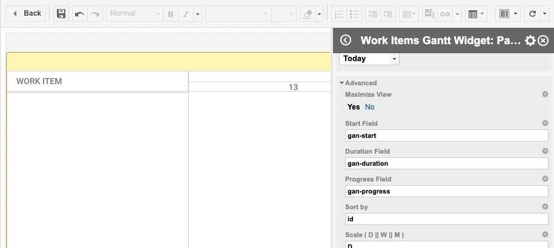

Setup
Installation
- Download the latest distribution from here
- Copy
com.nextedy.polarion.ganttfolder into[POLARION_INSTALL]/polarion/extensionfolder. - If you already have production license, please copy the
gantt_lic.jsonfile to[POLARION_INSTALL]/polarion/license - Delete
[POLARION_INSTALL]/data/workspace/.config - Restart Polarion server
Configure Gantt View
There are two Live-Report widgets available
- Work Items Gantt - exposing Polarion Work Items as items on gantt
- Plan Gantt - exposing Polarion Plans as items on gantt
Check following screenshot and "Work Items Gantt" in "Work Items" category.

All the configuration options are described on Widget Parameters page.
In this guide we dive deeper into configuration of Work Items Gantt
Full Report Gantt
The most common approach to show Work Items Gantt is to create a single LiveReport page, call it for example Gantt, and put the Work Items Gantt Widget as single widget there.
In this case, we recommend to activate the following widget property:
Advanced>Maximize- set the Maximize property of the widget to 'yes'
This will make the widget size equal to working area size.
Please make sure there are no additional empty paragraphs or other whitespace content around the widget.

Sometimes it is more useful to embed the Gantt widget to an existing report, together with other reporting widgets. In such case make sure that Maximize property is turned off.
Warning
Currently, it is possible to have only one Work Item Gantt widget on a page. Please do not add more of them on a single page.
Data Mapping
Once you have the widget on your page, you need to configure where to store scheduling information. The Gantt model is storing the following data:
- Start Date (Date)
- Duration (Number of days)
- Progress (Float from 0 .. 1)
You can configure the mapping using the Advanced Widget parameters:
-
Start Field- the name of the custom field, that stores the information when the work item starts.The type of the custom field can be any of these: Date, Date-Time or String.
If such custom field does not exist, the value will be stored in String ad-hoc custom field. For production use, we recommend using a Date (Only) custom field.
-
Duration Field- the name of the custom field, that stores the information about the work item duration as the number of days.The type of the custom field can be any of these: Integer or String.
If such custom field does not exist, the value will be stored in String ad-hoc custom field. For production use, we recommend using an Integer custom field.
-
Progress Field- the name of the custom field, that stores the progress of the work item progress as Float (multiply by 100 to get % of completion).The type of the custom field can be any of these: Float or String.
If such custom field does not exist, the value will be stored in String ad-hoc custom field. For production use, we recommend using a Float custom field.
Hierarchy
The hierarchy of items on the Gantt chart is derived from work item links. This is controlled by Parent Role widget parameter:
Parent Role- select what Work Item link roles should be used to detect the parent-child relationships. If empty, no hierarchy is shown.
Dependencies
The dependency links are also derived from the work item links. This is controlled by Dependency Role widget parameter:
-
Dependency Role- select what Work Item link roles should be used to detect Depends-on relationships. If empty, no dependencies will be shown.If you select multiple link roles, the first role is used when creating new links.
If you do not want to let the user create dependency links, put following property to Advanced > Gantt Config Script parameter:
gantt.config.drag_links = false;
Time Range
By default the Gantt chart shows the time range as small as to fit the items.
If you want to set the start and end date manually, for example to allow the dragging of the items to future, set following properties in Advanced > Gantt Config Script (both need to be set).
gantt.config.start_date = new Date(2018, 12, 10); gantt.config.end_date = new Date(2020, 08, 20);
More
There are more configuration options available, see Widget Parameters page for the full list.